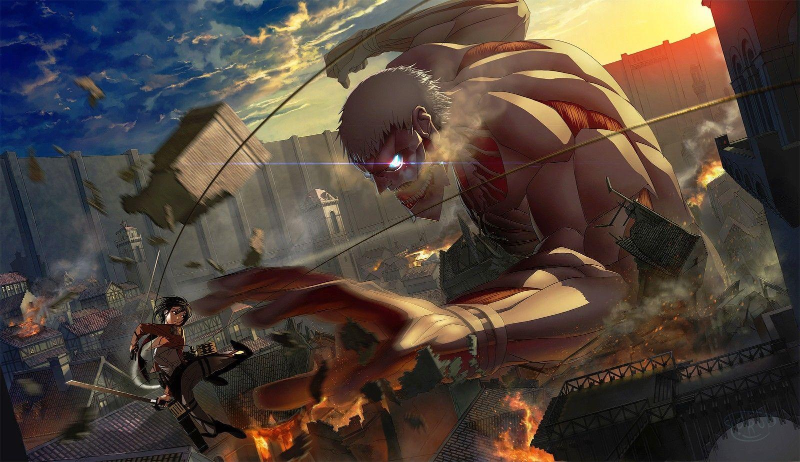

Synopsis
Attack on Titan (進撃の巨人 Shingeki no Kyojin?, lit. "Advancing Giant(s)") is an anime series based on the manga of the same name by Hajime Isayama. It was produced by Wit Studio and Production I.G for the first three seasons and by MAPPA for the fourth. The first season began airing in Japan on April 7, 2013, on Mainichi Broadcasting System.
Review
It gives me everything I want, im really into that supernatural type stuff and not so modern but modern enough you know, and the characters are just so 😩Like marry me please *cough* *cough* Levi😂❤. Anywayyyy if your looking for ones with a big plot twist this is defs ur show and I love it when ur fav character always had that time were they go full extreme and surpass their limits to extreme and become super strong. Lol. Their technology and advancements over time are so cool and the titan and their story puts you on edge and you don't expect it! You never know who's a traitor or who's a titan or what's going to happen! I'm really into the whole supernatural type stuff just like these titans! And there emotions and voice acting IS AMAZING!! There are so many sad deaths and scenes but also so many glorious scenes aswell! And friendships too! You fall inlove with the characters and see their development thr I ughout the show, their weaknesses and strengths and turn their weaknesses into strengths and help alongside their rivals and comrades. The most wholesome thing about the show is about the saying that they have about fighting for humanity and putting their hearts on the line to protect and save humanity from extinction from these beasts but you'll soon find the biggest twist on how they came to be. This is my opinion hands down the best anime to full fill your blood thrusting edge of your seat action pack thrilling adventure.❤.